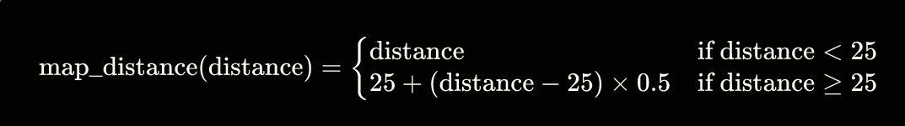

Exploring the Feasibility of Sim2Real Transfer in Reinforcement Learning
Name: Lucas Driessens
Institution: Howest University of Applied Sciences
Course: Thesis
Date: 2024-19-02
Github Repository: https://github.com/driessenslucas/researchproject
Table of Contents
Description
This project explores the feasibility of transferring a trained Reinforcement Learning (RL) agent from a virtual environment to the real world, focusing on navigating a maze with a remote-controlled (RC) car.
Abstract
In this research project, I delve into the fascinating realm of artificial intelligence, specifically focusing on reinforcement learning (RL) and its application in real-world scenarios. The crux of my investigation revolves around the challenging question: "Is it possible to transfer a trained RL agent from a simulation to the real world?" This inquiry is particularly examined in the context of maze navigation.
This research is partitioned into sub-questions, which collectively aim to create a comprehensive understanding of the process. Firstly, I explore the various virtual environments available for training a virtual RF-car, seeking the most effective platform for my purposes. Secondly, I delve into identifying the most suitable reinforcement learning techniques for this specific application, considering factors like efficiency, adaptability, and real-world applicability. Lastly, the research seeks to bridge the gap between simulation and reality, investigating the practicality and challenges involved in this transition.
Through this study, I aspire to contribute significantly to the field of AI and robotics, offering insights and methodologies that could potentially advance the implementation of RL in real-world applications. The outcomes of this research could have far-reaching implications, not only in robotics but also in areas where simulation-based training is crucial.
Based on your input, it looks like you're building a comprehensive list of key terms and abbreviations for your paper on reinforcement learning and its application to a remote-controlled car in a sim2real transfer scenario. Here's how you can structure these sections for clarity and easy reference:
Glossary of Terms
-
Artificial Intelligence (AI): The simulation of human intelligence processes by machines, especially computer systems, enabling them to perform tasks that typically require human intelligence.
-
Double Deep Q-Network (DDQN): An enhancement of the Deep Q-Network (DQN) algorithm that addresses the overestimation of action values, thus improving learning stability and performance.
-
Epsilon Decay: A technique in reinforcement learning that gradually decreases the rate of exploration over time, allowing the agent to transition from exploring the environment to exploiting known actions for better outcomes.
-
Mean Squared Error (MSE): A loss function used in regression models to measure the average squared difference between the estimated values and the actual value, useful for training models by minimizing error.
-
Motion Processing Unit (MPU6050): A sensor device combining a MEMS (Micro-Electro-Mechanical Systems) gyroscope and a MEMS accelerometer, providing comprehensive motion processing capabilities.
-
Policy Network: In reinforcement learning, a neural network model that directly maps observed environment states to actions, guiding the agent's decisions based on the current policy.
-
Raspberry Pi (RPI): A small, affordable computer used for various programming projects, including robotics and educational applications.
-
RC Car: A remote-controlled car used as a practical application platform in reinforcement learning experiments, demonstrating how algorithms can control real-world vehicles.
-
Reinforcement Learning (RL): A subset of machine learning where an agent learns to make decisions by taking actions within an environment to achieve specified goals, guided by a system of rewards and penalties.
-
Sim2Real Transfer: The practice of applying models and strategies developed within a simulated environment to real-world situations, crucial for bridging the gap between theoretical research and practical application.
-
Target Network: Utilized in the DDQN framework, a neural network that helps stabilize training by providing consistent targets for the duration of the update interval.
-
Virtual Environment: A simulated setting designed for training reinforcement learning agents, offering a controlled, risk-free platform for experimentation and learning.
List of Abbreviations
- AI - Artificial Intelligence
- DDQN - Double Deep Q-Network
- DQN - Deep Q-Network
- ESP32 - Espressif Systems 32-bit Microcontroller
- HC-SR04 - Ultrasonic Distance Sensor
- MSE - Mean Squared Error
- MPU6050 - Motion Processing Unit (Gyroscope + Accelerometer)
- PPO - Proximal Policy Optimization
- RC - Remote Controlled
- RPI - Raspberry Pi
- RL - Reinforcement Learning
- RCMazeEnv - RC Maze Environment (Custom Virtual Environment for RL Training)
- Sim2Real - Simulation to Reality Transfer
Introduction
The journey of developing autonomous vehicles using reinforcement learning (RL) techniques in virtual environments is marked by continuous learning and adaptation. This paper, originally intended to showcase successful implementation strategies, has evolved to also highlight the challenges and iterative nature of such projects. The focus remains on the sim2real transfer and the specific challenges encountered in the alignment of an autonomous remote-controlled car.
Background on Reinforcement Learning (RL)
Reinforcement Learning (RL) is a paradigm of machine learning where an agent learns to make decisions by interacting with its environment. In RL, the agent seeks to maximize cumulative rewards through a process of trial and error, guided by feedback from its actions. The fundamental elements of RL include the agent, environment, actions, states, and rewards. The RL process can be mathematically described using Markov Decision Processes (MDP) where:
$$ S \text{ is a set of states} $$
$$ A \text{ is a set of actions} $$
$$ P(s*{t+1}|s_t, a_t) \text{ is the probability that action } a_t \text{ in state } s_t \text{ at time } t \text{ will lead to state } s*{t+1} $$
$$ R(s*{t}, a_t) \text{ is the reward received after transitioning from state } s_t \text{ to state } s*{t+1}, \text{ due to action } a_t $$
Real-World Applications of RL
RL has been successfully applied in various fields, including robotics, gaming, healthcare, finance, and autonomous vehicles. One notable example is the use of RL in AlphaGo, developed by DeepMind, which defeated the world champion in the game of Go. In robotics, RL enables robots to learn complex tasks like walking, manipulation, and navigation without explicit programming. In the financial sector, RL algorithms are used for algorithmic trading, optimizing portfolios, and managing risks.
Purpose and Significance of the Study
The purpose of this study is to explore the feasibility and challenges of transferring a trained RL agent from a simulated environment to the real world. This transition, known as "sim2real," is particularly examined in the context of maze navigation using a remote-controlled (RC) car. The significance of this research lies in its potential to bridge the gap between theoretical RL models and practical, real-world applications, which is a critical step in advancing the field of AI and robotics.
Overview of the Research Questions
The main research question focuses on whether a trained RL agent can be effectively transferred from a simulation to a real-world environment. Sub-questions delve into the selection of virtual environments for training, the identification of suitable RL techniques, the practical aspects of the sim2real transfer, and the evaluation of real-time learning capabilities. These questions aim to comprehensively understand the intricacies involved in applying RL in real-world scenarios.
Main Research Question
Is it possible to transfer a trained RL-agent from a simulation to the real world? (case: maze)
Sub Research Questions
-
Which virtual environments exist to train a virtual RC-car?
-
Which reinforcement learning techniques can I best use in this application?
-
Can the simulation be transferred to the real world? Explore the difference between how the car moves in the simulation and in the real world.
-
Does the simulation have any useful contributions? In terms of training time or performance?
-
How can the trained model be transfered to the real RC car? (sim2real) How do you need to adjust the agent and the environment for it to translate to the real world?
Methodology
Virtual Environment Design
RCMazeEnv Environment
-
Description: The RCMazeEnv is a custom class derived from the OpenAI Gym library. It simulates a robotic car navigating through a maze. The environment is designed to replicate real-world physics and constraints within a virtual setting.
-
Maze Structure:
- Starting Position: Top-left corner of the maze. With the car facing East.
- Goal: Bottom-right corner, representing the maze exit.
- Layout: The maze layout is configurable, allowing for various complexity levels.
-
Robotic Car Specifications:
- Movement Actions: Forward, turn left, turn right.
- Orientation: North, East, South, West.
- Sensors: Front, left, and right distance sensors to walls.
-
Reward System:
- Negative rewards for each step and revisiting positions.
- Substantial negative reward for hitting a wall.
- Positive reward for proximity to the goal and reaching the exit.
-
Reset Functionality: Ability to reset the car to its starting position and reinitialize variables.
Agent Design: Double Deep Q-Network (Double DQN)
-
Algorithm Overview: The Double DQN algorithm enhances traditional reinforcement learning methods by employing two neural networks, the policy network, and the target network, to reduce overestimation of Q-values.
-
Network Architecture:
- Policy Network: Selects actions based on the current state.
- Target Network: Provides a stable target for future state evaluation.
- Replay Memory: Stores experiences for learning and optimization.
-
Learning Process: The agent continually adapts through interaction with the environment, using sensor data to inform movement decisions.
Experimental Setup
https://github.com/driessenslucas/researchproject/assets/91117911/b440b295-6430-4401-845a-a94186a9345f
Training Process of the Double DQN Agent
Model Architecture
The Double DQN model employed in this research is structured as follows:
Model: "sequential_52"
---
# Layer (type) Output Shape Param
=================================================================
dense_200 (Dense) (None, 32) 224
dense_201 (Dense) (None, 64) 2112
dense_202 (Dense) (None, 32) 2080
dense_203 (Dense) (None, 3) 99
=================================================================
Total params: 4515 (17.64 KB)
Trainable params: 4515 (17.64 KB)
Non-trainable params: 0 (0.00 Byte)
---
This neural network consists of four dense layers, with the output shape and parameter count as detailed above. The final layer outputs three actions corresponding to the movement capabilities of the RC car: moving forward, turning left, and turning right.
Training Parameters
The training of the Double DQN agent was governed by the following parameters:
- Discount Factor (
DISCOUNT): 0.90
- Batch Size: 128
- Number of steps (samples) used for training at a time.
- Update Target Interval (
UPDATE_TARGET_INTERVAL): 2
- Frequency of updating the target network.
- Epsilon (
EPSILON): 0.99
- Initial exploration rate.
- Minimum Epsilon (
MIN_EPSILON): 0.01
- Minimum value for exploration rate.
- Epsilon Decay Rate (
DECAY): 0.99993
- Rate at which exploration probability decreases.
- Number of Episodes (
EPISODE_AMOUNT): 170
- Total episodes for training the agent.
- Replay Memory Capacity (
REPLAY_MEMORY_CAPACITY): 2,000,000
- Maximum size of the replay buffer.
- Learning Rate: 0.001
- The rate at which the model learns from new observations.
Training Procedure
- Initialization: Start with a high exploration rate (
EPSILON) allowing the agent to explore the environment extensively.
- Episodic Training: For each episode, the agent interacts with the environment, collecting state, action, reward, and next state data.
- Replay Buffer: Store these experiences in a replay memory, which helps in breaking the correlation between sequential experiences.
- Batch Learning: Randomly sample a batch of experiences from the replay buffer to train the network.
- Target Network Update: Every
UPDATE_TARGET_INTERVAL episodes, update the weights of the target network with those of the policy network.
- Epsilon Decay: Gradually decrease the exploration rate (
EPSILON) following the decay rate (DECAY), shifting the strategy from exploration to exploitation.
- Performance Monitoring: Continuously monitor the agent's performance in terms of rewards and success rate in navigating the maze.
Reinforcement Learning Techniques Overview
1. Deep Q-Network (DQN)
-
Description: The Deep Q-Network (DQN) combines a deep neural network with a Q-learning framework. It excels in handling high-dimensional sensory inputs, making it ideal for environments demanding detailed interaction.
-
Suitability: DQN's advanced learning capabilities are tempered by its tendency to overestimate Q-values in complex environments. This limitation could affect its effectiveness in training RC-cars, where environmental dynamics are unpredictable.
-
Integration and Results:

https://github.com/driessenslucas/researchproject/assets/91117911/a7c5964e-139c-46a1-af79-85280a26c9d2

- Performance: DQN's performance, while competent, was limited by Q-value overestimation in intricate scenarios.
2. Double Deep Q-Network (DDQN)
-
Description: The Double Deep Q-Network (DDQN) improves upon DQN by employing two neural networks. This structure effectively reduces overestimation bias by separating action selection from Q-value generation.
-
Reason for Selection:
- DDQN's accuracy in Q-value approximation is crucial for navigating complex environments, such as mazes.
- The RC-car's sensor limitations, which could lead to Q-value overestimations, are better addressed by DDQN.
- Empirical trials showed DDQN's superior performance in maze navigation tasks.
-
Integration and Results:

https://github.com/driessenslucas/researchproject/assets/91117911/de50eaf8-49b9-4bf3-8083-8b2bc0963001

- Performance: DDQN solved the environment in an average of 25 steps, compared to DQN's 34 steps, highlighting its efficiency.
3. Proximal Policy Optimization (PPO)
-
Description: Proximal Policy Optimization (PPO) is a policy gradient method that directly optimizes decision-making policies. It's known for its stability and efficiency in specific RL contexts.
-
Suitability: PPO's emphasis on policy optimization over value estimation makes it less suitable for RC-car simulations, where accurate Q-value approximation is key.
-
Integration and Results:

https://github.com/driessenslucas/researchproject/assets/91117911/23a34a9d-7957-4484-a7ce-cfc74c4b9790

- Performance: PPO, while stable, did not align well with the precision requirements for RC-car maze navigation.
Hardware Setup and Assembly
Introduction to Hardware Components
This section provides a detailed overview of the hardware components used in the research project, focusing on the assembly and configuration of the RC robot designed for maze navigation.

Components List
- Core Components:
- Supplementary Materials: List of additional materials like screws, wires, and tools required for assembly.
- 4mm thick screws 5mm long to hold the wood together - available at brico
- m3 bolt & nuts - available at brico
- wood for the maze - available at brico
Wiring Guide
- ESP32 Wiring:
Challenges and Solutions in Implementing RL Techniques and Virtual Environments
Challenge 1: Selection of an Appropriate Virtual Environment
- Description: Choosing a virtual environment conducive to effective RC-car training is crucial.
- Solution: After evaluating various platforms, OpenAI Gym was selected for its simplicity, familiarity from previous coursework, and its focus on reinforcement learning.
Challenge 2: Choosing the Optimal Reinforcement Learning Technique
- Description: Selecting the most effective RL technique for training the virtual RC-car.
- Solution: Through comparative analysis and empirical testing, the Double Deep Q-Network (DDQN) was identified as the most suitable technique, demonstrating superior performance in navigating complex environments with fewer episodes.
Challenge 3: Sim2Real Transfer - Addressing Movement Discrepancies
- Description: Bridging the gap between simulation and real-world in terms of RC-car movement and control.
- Solution Attempt: Fine-tuning the frequency of action commands with an async method, waiting for the motor to finish moving or considering a queued action system. Futher more the importance of precise movement in the real world was highlighted, which was not a problem in the simulation.
Challenge 4: alignment Issue and Motor Encoder Implementation
- Description: Difficulty in achieving precise straight-line movement in the RC car, with a persistent ~3-degree offset.
- Solution Attempt 1: Implementation of motor encoders was pursued to enhance movement accuracy. However, this approach faced the same limitations in achieving the desired precision.
- Solution Attempt 2: The motor was replaced with a more powerful one, which initially showed promise in addressing the alignment issue. However, after adding all the other components, the car's weight increased, leading to the same problem. view video
- Solution Attempt 3: The use of a MPU6050 gyroscope was explored to measure the car's orientation and adjust the movement accordingly. Even though this approach succeeded to some extent (90 degrees turns were accurate), it was not able to solve the ~3-degree offset issue when moving forward.vdeo of turning 90 degrees video of moving forward
- Solution Attempt 4: The final solution I tried was done by removing the RPI5 (previously used for sensor data and running the web app) from the robot all together and using the ESP32 to control both all the sensors and the motors. This allowed for a more lightweight robot, which was able to move forward more precisely but it failed to rotate 90 degrees accurately. view video
Challenge 5: Ensuring Consistent and Effective Training
- Description: Maximizing training efficiency and performance while maintaining consistency between simulation and real-world scenarios.
- Solution: The simulation demonstrated considerable advantages in terms of training efficiency, safety, and computational power, establishing it as an indispensable tool in autonomous vehicle model development.
Challenge 6: Accurate Sensor Data Normalization for Sim2Real Transfer
-
Description: Aligning sensor data between simulated and real-world environments is critical for model accuracy.
-
Solution: Implementing specific normalization techniques for both real-world and simulation sensor data ensured consistency and compatibility, enhancing the model's accuracy in real-world applications.
-
- Real-World Sensor Data Normalization:
The function map_distance normalizes real-world sensor data. It can be represented as follows:

This function keeps distances under 25 cm unchanged and applies a scaling factor of 0.5 to distances beyond 25 cm, adding this scaled value to a base of 25 cm.
-
- Simulation Sensor Data Normalization:
The function normalize_distance adjusts simulated sensor data to a 0-1 range. Its equation is:

In this function, the distance is first scaled by dividing by sensor_max_range. It's then clamped between 0 and 1 before multiplying by 1000 to normalize it within a specific range.
Challenge 7: Integration of Failsafe Mechanisms
- Description: Preventing potential collisions and ensuring safe navigation in the real world.
- Solution: Development of a failsafe system that prevents forward movement in hazardous situations, retraining the model with this protocol to align real-world behavior with the simulated environment.
Challenge 8: Training Environment and Technique Efficacy
- Description: Determining the most effective environment and RL technique for training.
- Solution: The DDQN solved the environment more efficiently than DQN, highlighting the importance of technique selection. The simulation provided a safer, more controlled environment for training, reinforcing its selection over real-world training.
Conclusion
This section has outlined the practical challenges encountered in applying reinforcement learning (RL) techniques to autonomous RC cars. My journey began with the selection of OpenAI Gym as the virtual environment, chosen for its simplicity and relevance to RL. The Double Deep Q-Network (DDQN) emerged as the most effective RL technique for navigating complex environments.
However, transitioning from simulated models to real-world applications revealed significant discrepancies, particularly in movement control and sensor data alignment. I explored innovative solutions such as the implementation of motor encoders, power adjustments, and gyroscope integration, which partially addressed these issues. Efforts to normalize sensor data and implement failsafe mechanisms also contributed to better alignment with real-world conditions.
A significant advancement was achieved by replacing the Raspberry Pi and ESP32 with just the ESP32 module in the robot's design, leading to a more lightweight and precise robot. This change marked a considerable step in overcoming the challenges previously faced.
Although I made substantial progress, some challenges remain. This indicates a need for ongoing research and development to fully harness the potential of RL in autonomous RC car navigation.
In conclusion, this project underscores the iterative and demanding nature of applying RL techniques in real-world scenarios. It highlights the importance of continuous refinement, innovation, and adaptation, beyond the theoretical knowledge base. The journey through these challenges has emphasized the significance of perseverance and creative problem-solving in the evolving field of autonomous vehicle technology.
Supplementary Materials: Video Demonstrations
Introduction
This section provides examples of how I attempted to solve some of the challenges encountered in this research project. For more videos, please refer to the video folder
Video 1: mpu6050 90 degree turn
- Description: This video demonstrates the use of the MPU6050 gyroscope to measure the car's orientation move until the car has rotated ~90 degrees since the start of the movement. This approach was used in an attempt to address the alignment issues when using a delay to measure the amount of time the car needs to make a 90 degree turn.
- test 1:
https://github.com/driessenslucas/researchproject/assets/91117911/32d9e29f-6d5a-4676-b609-2c08923ca1ac
https://github.com/driessenslucas/researchproject/assets/91117911/624b40f2-bee8-49f6-961d-1f72ab18fe13
Video 2: mpu6050 to align forward movement
- Description: This video demonstrates the use of the MPU6050 gyroscope to measure the car's orientation while driving forward and adjust the movement accordingly. This approach was used in an attempt to address the alignment issues, but it was not able to solve the ~3-degree offset issue when moving forward.
- test 1:
https://github.com/driessenslucas/researchproject/assets/91117911/bb9aa643-9620-4979-a70c-ec2826c7dd33
https://github.com/driessenslucas/researchproject/assets/91117911/689b590f-3a9a-4f63-ba9c-978ddd08ab53
https://github.com/driessenslucas/researchproject/assets/91117911/99da37df-d147-43dc-828f-524f55dc6f70
video 4: New RC-car with encoder and more powerful motor
- Description: This video demonstrates the use of a rotary encoder to measure the amount of rotations the wheels have made. This approach was used in an attempt to address the address the ~3 degree offset when moving forward. This approach was looking promising, until adding the other components to the car, which increased the weight of the car, leading to the same problem.
- test 1:
https://github.com/driessenslucas/researchproject/assets/91117911/9728e29a-d2fa-48fa-b6e0-e2e1da92228f
https://github.com/driessenslucas/researchproject/assets/91117911/b9ce2cc3-85fd-4136-8670-516c123ba442
video 5: Encoder implementation (original RC-car)
- Description: This video demonstrates reading out the wheel rotations measured by the rotary encoder. This approach again looked promising, but shortly after this video one of the encoders broke, so no further tests with this specific encoder were done.
- test 1:
https://github.com/driessenslucas/researchproject/assets/91117911/ae5129fa-c25f-4f89-92bb-4ee81df9f7a5
video 6: Robot v2
- Description: This video demonstrates the final version of the RC-car. This version uses the ESP32 to control both the sensors and the motors. This allowed for a more lightweight robot, which was able to move more precisely.
- test 1:
https://github.com/driessenslucas/researchproject/assets/91117911/1773a4f5-8618-4114-ad4c-11781bee4088
video 7: Maze Test Outdoors
- Description: This video demonstrates an attempt to test the RC-car outdoors. This test was not successful due to surface texture.
- test 1:
https://github.com/driessenslucas/researchproject/assets/91117911/02df8a25-b7f0-4061-89b7-414e6d25d31c
https://github.com/driessenslucas/researchproject/assets/91117911/187561a7-c0cb-4921-af3e-9c2c99cb0137
video 8: Maze Test Indoors
- Description: This video demonstrates the RC-car navigating the maze indoors. This test was also not successful due imperfect conditions.
- test 1:
https://github.com/driessenslucas/researchproject/assets/91117911/ce0f47e9-26cd-459e-8b26-ff345d1ee96b
https://github.com/driessenslucas/researchproject/assets/91117911/ea4a9bff-e191-4ce2-b2cc-acc57c781fa3
https://github.com/driessenslucas/researchproject/assets/91117911/4783729f-10cc-4c61-afa4-71cfc93d5d3e
https://github.com/driessenslucas/researchproject/assets/91117911/77091cb5-dbc5-4447-abc2-dc820dc66188
Real-World Application and Limitations
Introduction to Sensor and Movement Discrepancies
The transition from a simulated environment to real-world application introduces unique challenges, particularly in terms of sensor data interpretation and car movement replication. This section explores these aspects in detail.
Real-World Application
Sensor-Based Navigation
In real-world scenarios, the application of sensor-based navigation, as developed in the simulation, can significantly enhance the capabilities of autonomous vehicles. This technology can be pivotal in environments where precision and adaptability are crucial, such as in urban traffic management or automated delivery systems.
Impact on Autonomous Vehicle Movement
The insights gained from the simulation regarding vehicle movement can inform the development of more sophisticated autonomous vehicle behavior, particularly in navigating complex, dynamic environments. This knowledge is invaluable for improving the safety and efficiency of autonomous transportation systems.
Limitations
Sensor Data Discrepancies
One major challenge lies in the discrepancies between sensor data in the simulation and the real world. These differences can affect the accuracy of the navigational algorithms and, consequently, the vehicle's ability to make real-time decisions.
Movement Replication Challenges
Replicating the precise movements of the simulated car in a real-world setting poses significant challenges. Factors such as surface texture, vehicle weight, and mechanical limitations can lead to variations in movement that are not present in the controlled environment of the simulation.
Practical Considerations
Practical implementation of these findings necessitates considering variables such as sensor calibration, environmental factors, and hardware capabilities. Overcoming these challenges is essential for the successful application of sim2real transfer in autonomous vehicle navigation.
Conclusion
The transition from simulation to real-world application in autonomous vehicle navigation, especially regarding sensor usage and car movement, presents both promising opportunities and significant challenges. Addressing these discrepancies is key to harnessing the full potential of sim2real transfer in practical, real-world scenarios.
Answers to Research Questions
1. Which virtual environments exist to train a virtual RF-car?
Introduction
The selection of an appropriate virtual environment is crucial for the effective training of a virtual Radio Frequency (RF) car. Various platforms offer unique features suitable for simulating different aspects of autonomous driving. This document evaluates several virtual environments to determine the most suitable choice for training a virtual RF-car.
Executive Summary
There is no 'one-size-fits-all' solution for virtual environments. I used openAI gym because it is easy to create custom environments in it and I have experience with it from my Advanced AI coursework.
Virtual Environments Overview
-
Unity 3D
- Website: Unity 3D
- Description: Unity 3D is renowned for creating realistic, detailed virtual environments. It's commonly employed for simulating autonomous driving scenarios.
- Reason for Exclusion: My proficiency lies primarily in Python, and I lack experience with Unity. This mismatch in skill set led to the decision against using Unity for this project.
-
AirSim
- Website: AirSim
- Description: AirSim, developed on Unreal Engine, is a versatile simulator for drones, cars, and more. It offers realistic simulations for both physical and visual aspects.
- Reason for Exclusion: AirSim's primary focus on cars, as opposed to RF-cars, makes it less suitable for this specific project.
-
CARLA
- Website: CARLA
- Description: CARLA is a comprehensive platform for autonomous driving systems' development, training, and validation. It provides open-source code, protocols, and digital assets.
- Reason for Exclusion: CARLA's focus on autonomous driving systems, as opposed to RF-cars, makes it less suitable for this specific project.
-
OpenAI Gym
- Website: OpenAI Gym
- Description: This toolkit is designed for the development and comparison of reinforcement learning algorithms. It's known for its ease of use in creating custom environments.
- Reason for Selection: Familiarity from Advanced AI coursework and the flexibility to create custom environments make OpenAI Gym an ideal choice. Its simplicity and focus on reinforcement learning align well with the project's objectives, particularly in SIM2REAL transfer.
-
ISAAC Gym
- Website: ISAAC Gym
- Description: NVIDIA's Isaac Gym focuses on training robotics AI skills within a reinforcement learning framework. It offers accurate world and sensor models through the NVIDIA Omniverse.
- Reason for Exclusion: The project's focus on RF-cars, as opposed to robots, makes ISAAC Gym less suitable for this specific project. Additionally, the amount of time it would take to create a rf-car that is an exact copy the real rf-car I already had, would be too much.
Conclusion
Considering the project's needs for a simple, lightweight environment conducive to SIM2REAL transfer and the existing familiarity with the tool, OpenAI Gym emerges as the optimal choice. Its ease of use for creating custom environments and focus on reinforcement learning agents provide the necessary foundation for this project.
2. Which reinforcement learning techniques can I best use in this application?
Introduction
The efficacy of training a virtual Radio Frequency (RF) car in a simulation environment hinges significantly on the choice of reinforcement learning (RL) techniques. This document explores various RL methods, assessing their suitability for the nuanced requirements of RF-car training, with an emphasis on navigating complex environments.
Executive Summary
My tests concluded that the Double Deep Q-Network (DDQN) is the most suitable technique for my application. It didn't need many episodes to be able to solve the environment efficiently.
Reinforcement Learning Techniques Overview
-
Deep Q-Network (DQN)
- Description: DQN integrates a deep neural network with a Q-learning framework. It stands out for its proficiency in processing high-dimensional sensory inputs, making it a strong candidate for applications requiring detailed environmental interaction.
- Suitability: While DQN offers advanced learning capabilities, its tendency to overestimate Q-values in environments with intricate and unpredictable dynamics can be a limitation for training RF-cars.
- Visual Representation of my integration:
- Reward History of the DQN:

-
Double Deep Q-Network (DDQN)
- Description: DDQN, an evolution of DQN, employs dual neural networks. This structure effectively mitigates the overestimation bias present in DQN by decoupling action selection from Q-value generation.
- Reason for Selection: The choice of DDQN is driven by its enhanced accuracy in Q-value approximation, crucial for navigating the intricate maze-like environments encountered by virtual RF-cars. The RF-car's limited sensor range can lead to overestimations in Q-values, a challenge adeptly addressed by DDQNs design. Through empirical trials, DDQN demonstrated superior performance, validating its selection for this application.
- Visual Representation of my integration:

- Reward History of the DDQN:

-
Proximal Policy Optimization (PPO)
- Description: PPO, a policy gradient method, optimizes decision-making policies directly. It is renowned for its stability and efficiency in environments where policy output is more consequential than value estimation.
- Suitability: PPO, despite its strengths in certain RL contexts, is less aligned with the specific needs of an RF-car simulation. The focus on policy over value estimation renders it suboptimal for environments where precise Q-value approximation is critical.
- Visual Representation of my integration:

- Reward History of the PPO:
| Reinforcement Learning Technique |
Pros |
Cons |
| Deep Q-Network (DQN) |
- Proficient in processing high-dimensional sensory inputs.
- Effective in detailed environmental interaction. |
- Tendency to overestimate Q-values in complex dynamics.
- Less suitable for unpredictable environments. |
| Double Deep Q-Network (DDQN) |
- Addresses overestimation bias of DQN with dual neural networks.
- Enhanced accuracy in Q-value approximation.
- Demonstrated superior performance in preliminary trials. |
- More complex architecture than DQN.
- Potentially requires more computational resources. |
| Proximal Policy Optimization (PPO) |
- Directly optimizes decision-making policies.
- Known for stability and efficiency. |
- Less focused on value estimation, which is crucial for RF-car training.
- Suboptimal for environments where precise Q-value approximation is critical. |
Conclusion
The Double Deep Q-Network (DDQN) emerges as the most suitable technique for the virtual RF-car training. Its ability to accurately estimate Q-values in complex, sensor-driven environments, coupled with its proven performance in preliminary trials, underscores its effectiveness for this specific application.
On top of that the DDQN sovled the environment in 25 steps on average, against the DQN which solved the environment in 34 steps on average. Which is a significant improvement.
3. Can the simulation be transferred to the real world? Explore the difference between how the car moves in the simulation and in the real world
Introduction
In addressing the critical task of transferring the simulation model to a real-world RF-car, this section explores the encountered discrepancies and the adjustments made to facilitate an effective sim-to-real transition.
Executive Summary
There needed to be some adjustments made to the simulation to account for how the car moves in the real world. Especially in the way the distance to the walls is calculated
Discrepancies and Adjustments
-
Sensor Data Normalization
- Challenge: The primary challenge was reconciling the differences in how the distance to walls was determined in the simulation versus the real world.
- Solution: Adjustments were made to the normalization of distance values in the simulation. This ensured that the sensor readings in the simulation were more aligned with those in the real world, enhancing the accuracy of the model's predictions in physical testing.
-
Action Synchronization and Failsafe Mechanisms
- Challenge: The absence of a failsafe in the simulation led to instances where the real car would collide with walls, indicating a discrepancy in action execution.
- Solution: The introduction of a failsafe mechanism and retraining of the model, as well as consideration for a rotary encoder as an alternative solution, significantly mitigated this issue.
-
Signal Processing for RF-car Movements
- Challenge: In the real-world scenario, the RF signals controlling the car were sent too rapidly, causing movement issues not present in the simulation.
- Solution: By reducing the frequency of action commands sent to the car, we achieved better synchronization between the simulation and real-world actions. Alternative solutions like direct motor driver connection or a queued action execution system were also explored, but ultimately deemed less suitable given the resources available.
-
Physical Dynamics and Motor Control
- Challenge: The real car's turns and movements were affected by factors like weight and texture of the floor, which were not accounted for in the simulation.
- Solution: Adjusting the motor control timings, specifically the delay in turning the motors on and off, allowed for more accurate replication of the simulated movements in the real car. Additionally adjusting the car's center of gravity and using a flat undergroud texutre helped the car to move more like it is supposed to.
Conclusion
The process of transferring the simulation model to a real-world RF-car highlighted several key discrepancies, primarily in sensor data interpretation, action synchronization, signal processing, and physical dynamics. Through targeted adjustments and solutions, these challenges were addressed, enabling a more accurate and reliable sim-to-real transfer. This experience underscores the importance of thorough testing and adaptation in bridging the gap between simulated environments and real-world applications.
Introduction
This section explores the significant advantages of using simulation for the training of a virtual RF-car, particularly focusing on aspects of training efficiency and performance.
Executive Summary
The simulation makes the training process more efficient and easier to manage. It also allows for the utilization of more powerful computing resources, greatly accelerating the training process.
Advantages of Simulation Training
-
Training Efficiency
- Challenge in Real-World Training: Real-world training requires programming the car for autonomous return to the start position after each episode, continuous supervision to prevent crashes and or manual intervention to reset the episode.
- Solution with Simulation: The simulation environment eliminates these needs, allowing for uninterrupted and automated training sessions. This results in a more streamlined and time-efficient training process.
-
Safety and Supervision
- Challenge in Real-World Training: Even with failsafe mechanisms, real-world training poses risks of crashes or other accidents, necessitating constant observation.
- Solution with Simulation: The virtual environment provides a risk-free platform for training, removing the need for constant supervision and manual intervention.
-
Computational Efficiency
- Challenge in Real-World Training: Training the model on the Raspberry Pi (RPI) in real life is significantly slower compared to using a more powerful computer.
- Solution with Simulation: Simulation allows for the utilization of more powerful computing resources, greatly accelerating the training process.
-
Model Performance and Practicality
- Observation: The model trained in real life exhibits similar performance to the one trained in the simulation.
- Conclusion: Despite the similarity in performance, the challenges and inefficiencies associated with real-life training make the simulation an evidently more practical and efficient method for model development.
Conclusion
The simulation offers considerable advantages in training the virtual RF-car, particularly in terms of efficiency, safety, and computational power. These benefits make simulation a highly valuable tool, significantly simplifying the training process and reducing the time and resources required, as compared to real-world training. The simulation thus stands out as an indispensable component in the development and refinement of autonomous vehicle models.
5. How can I transfer my trained model to my physical RC car? (sim2real) How do you need to adjust the agent, environment and model for it to work in the real world?
Reflection
Reflecting on the journey of this research, it's clear that the path from simulation to real-world application is fraught with unexpected challenges. The process has underscored the critical importance of adaptability, precision in sensor data interpretation, and the intricacies of physical implementation. Despite rigorous simulation and testing, the transition to the real world highlighted discrepancies that demanded innovative solutions. This experience has been invaluable, revealing the necessity of continuous experimentation and the potential for unforeseen obstacles in bridging the gap between theoretical models and their practical execution.
Advice for those Embarking on Similar Research Paths
- Expect the Unexpected: Real-world conditions introduce variables that are often not accounted for in simulations. Be prepared to iterate and adapt your solutions.
- Try not to be too attached to a specific solution:
- The journey to a successful implementation often involves multiple iterations and pivots. Be open to new ideas and approaches, this is somewhere I went wrong, I switched to new ideas too late in the process and could not test or implement them properly.
- Explore multiple virtual environments: I chose mine based on my knowledge of it, but it limited me while trying to implement the real-world application: The movement of the car was Difficult (near impossible) to replicate in the real world. Choosing a more sophisticated environment might have helped me to better prepare for the real-world application or allowed for a larger margin of error which openAI gym did not allow for (or my implementation of it did not allow for it).
- Precision Matters: Pay meticulous attention to the calibration and interpretation of sensor data. Discrepancies between simulated and real-world environments can significantly impact outcomes.
- Embrace Interdisciplinary Collaboration: The complexity of Sim2Real transfers benefits greatly from the insights and expertise of those in fields such as robotics, mechanical engineering, and computer science.
General Conclusion
This research has made significant strides in understanding the feasibility and challenges of Sim2Real transfers in reinforcement learning. While substantial progress was achieved, the journey illuminated the vast landscape of challenges that lie in the nuanced discrepancies between virtual and physical realms. Future endeavors in this domain should continue to push the boundaries of what is possible, leveraging the lessons learned to further bridge the gap between simulation and reality. The potential applications of successfully transferring RL agents to the real world are vast, promising advancements in robotics, autonomous vehicles, and beyond.
Credits
I am immensely grateful to my coach and supervisor, Gevaert Wouter, for his guidance and clever insights that significantly shaped the course of this research project. In addition to his invaluable assistance during the project, I would also like to extend my thanks for the enjoyable courses he delivered during my time at Howest.
Sources and Inspiration
Websites
- "10. Migrating from RPi.GPIO - GPIO Zero 1.6.2 Documentation." Accessed Jan. 29, 2024. [Online]. Available: https://gpiozero.readthedocs.io/en/stable/migrating_from_rpigpio.html
- "14. API - Input Devices - gpiozero 2.0 Documentation." Accessed Jan. 29, 2024. [Online]. Available: https://gpiozero.readthedocs.io/en/latest/api_input.html#distancesensor-hc-sr04
- "ailispaw/mjpg-streamer - Docker Image | Docker Hub." Accessed Jan. 29, 2024. [Online]. Available: https://hub.docker.com/r/ailispaw/mjpg-streamer
- "Amazon.com: ESP-WROOM-32 ESP32 ESP-32S Development Board 2.4GHz Dual-Mode WiFi + Bluetooth Dual Cores Microcontroller Processor Integrated with Antenna RF AMP Filter AP STA Compatible with Arduino IDE (1 PCS): Electronics." Accessed Jan. 29, 2024. [Online]. Available: https://www.amazon.com/ESP-WROOM-32-Development-Dual-Mode-Microcontroller-Integrated/dp/B07WCG1PLV?th=1
- "BadPinFactory error when using gpiozero Python library with RaspberryPi 4 - Project help." balenaForums. Accessed Jan. 29, 2024. [Online]. Available: https://forums.balena.io/t/badpinfactory-error-when-using-gpiozero-python-library-with-raspberrypi-4/367262
- "Box 18650 battery shield V8 by WerMRolenT." Thingiverse.com. Accessed Jan. 29, 2024. [Online]. Available: https://www.thingiverse.com/thing:6331087
- "Build a Raspberry Pi Webcam Server in Minutes." Pi My Life Up. Accessed Jan. 29, 2024. [Online]. Available: https://pimylifeup.com/raspberry-pi-webcam-server/
- "Create a Docker Container for Raspberry Pi to Blink an LED." IoT Bytes. Accessed Jan. 29, 2024. [Online]. Available: https://iotbytes.wordpress.com/create-your-first-docker-container-for-raspberry-pi-to-blink-an-led/
- "Holder for a HC SR04 Case by Legieps." Thingiverse.com. Accessed Jan. 29, 2024. [Online]. Available: https://www.thingiverse.com/thing:3436448
- "How to Make Raspberry Pi Webcam Server and Stream Live Video || Motion + Webcam + Raspberry Pi." Instructables. Accessed Jan. 29, 2024. [Online]. Available: https://www.instructables.com/How-to-Make-Raspberry-Pi-Webcam-Server-and-Stream-/
- "ikaritw/rpi-motion - Docker Image | Docker Hub." Accessed Jan. 29, 2024. [Online]. Available: https://hub.docker.com/r/ikaritw/rpi-motion
- "Multi-purpose 2wd robot chassis by Mayur7600." Thingiverse.com. Accessed Jan. 29, 2024. [Online]. Available: https://www.thingiverse.com/thing:2544002
- "Online Multiplayer Game in Repl using Pygame and Flask." replit. Accessed Jan. 29, 2024. [Online]. Available: https://replit.com/talk/ask/Online-Multiplayer-Game-in-Repl-using-Pygame-and-Flask/77222
- "Open Labyrinth mission. python coding challenges - Py.CheckiO." Py.CheckiO - games for coders. Accessed Jan. 29, 2024. [Online]. Available: https://py.checkio.org/en/mission/open-labyrinth/share/574bd1ded68c9705c5d6f07c6206be12/
- "Set up Docker on the Raspberry Pi." Pi My Life Up. Accessed Jan. 29, 2024. [Online]. Available: https://pimylifeup.com/raspberry-pi-docker/
GitHub Repositories
- "Add info on Docker setup - Issue #891 - gpiozero/gpiozero." GitHub. Accessed Jan. 29, 2024. [Online]. Available: https://github.com/gpiozero/gpiozero/issues/891
- A. Deka, "Ankur-Deka/gym." Aug. 23, 2021. Accessed Jan. 29, 2024. [Online]. Available: https://github.com/Ankur-Deka/gym
- armlabs, "armlabs/ssd1306_linux." Jan. 28, 2024. Accessed Jan. 29, 2024. [Online]. Available: https://github.com/armlabs/ssd1306_linux
- D. Li, "DailyL/Sim2Real_autonomous_vehicle." Nov. 14, 2023. Accessed Jan. 29, 2024. [Online]. Available: https://github.com/DailyL/Sim2Real_autonomous_vehicle
- FinFET, "FinFetChannel/RayCastingPythonMaze." Jan. 21, 2024. Accessed Jan. 29, 2024. [Online]. Available: https://github.com/FinFetChannel/RayCastingPythonMaze
- J. Brink, "jamesbrink/docker-opengl." Jan. 23, 2024. Accessed Jan. 29, 2024. [Online]. Available: https://github.com/jamesbrink/docker-opengl
- K. Jarzbski, "jarzebski/Arduino-MPU6050." Jan. 24, 2024. Accessed Jan. 29, 2024. [Online]. Available: https://github.com/jarzebski/Arduino-MPU6050
- Aleksei, "lexus2k/ssd1306." Jan. 28, 2024. Accessed Jan. 29, 2024. [Online]. Available: https://github.com/lexus2k/ssd1306
- "NVIDIA-Omniverse/IsaacGymEnvs." NVIDIA Omniverse. Jan. 29, 2024. Accessed Jan. 29, 2024. [Online]. Available: https://github.com/NVIDIA-Omniverse/IsaacGymEnvs
- D. de Lorenzo, "Sphinkie/ArrayQueue." Sep. 08, 2020. Accessed Jan. 29, 2024. [Online]. Available: https://github.com/Sphinkie/ArrayQueue
- "ssd1306/examples/demos/ssd1306_demo/ssd1306_demo.ino at master - lexus2k/ssd1306." GitHub. Accessed Jan. 29, 2024. [Online]. Available: https://github.com/lexus2k/ssd1306/blob/master/examples/demos/ssd1306_demo/ssd1306_demo.ino
- "utensils/Envisaged." Utensils. Jan. 23, 2024. Accessed Jan. 29, 2024. [Online]. Available: https://github.com/utensils/Envisaged
Stack Overflow Threads
- therion, "Accessing a Video Stream running on local HTTP host." Stack Overflow. Accessed Jan. 29, 2024. [Online]. Available: https://stackoverflow.com/q/63993265
- vonGohren, "Answer to 'Docker Access to Raspberry Pi GPIO Pins.'" Stack Overflow. Accessed Jan. 29, 2024. [Online]. Available: https://stackoverflow.com/a/30263573
- Priyanshu, "Answer to 'OpenGl and GLFW in a docker container.'" Stack Overflow. Accessed Jan. 29, 2024. [Online]. Available: https://stackoverflow.com/a/77780991
- Victor, "Answer to 'Why doesnt Python app print anything when run in a detached docker container?'" Stack Overflow. Accessed Jan. 29, 2024. [Online]. Available: https://stackoverflow.com/a/31796350
- Nyxynyx, "Docker Access to Raspberry Pi GPIO Pins." Stack Overflow. Accessed Jan. 29, 2024. [Online]. Available: https://stackoverflow.com/q/30059784
- jpdus, "Why doesnt Python app print anything when run in a detached docker container?" Stack Overflow. Accessed Jan. 29, 2024. [Online]. Available: https://stackoverflow.com/q/29663459
Academic Articles
- Q. Song et al., "Autonomous Driving Decision Control Based on Improved Proximal Policy Optimization Algorithm," Applied Sciences, vol. 13, no. 11, Art. no. 11, Jan. 2023. [Online]. Available: https://www.mdpi.com/2076-3417/13/11/6400
- J. Fu, A. Kumar, O. Nachum, G. Tucker, and S. Levine, "D4RL: Datasets for Deep Data-Driven Reinforcement Learning." arXiv, Feb. 05, 2021. Accessed Jan. 29, 2024. [Online]. Available: https://arxiv.org/pdf/2004.07219.pdf
- D. Backhouse, J. Gourlay, B. Guta, K. Huang, and K. Ng, "Gym2Real: An Open-Source Platform for Sim2Real Transfer." [Online]. Available: https://bguta.github.io/assets/Gym2Real_Capstone_Project_Report.pdf
- S. Tjiharjadi, M. Wijaya, and E. Setiawan, "Optimization Maze Robot Using A*and Flood Fill Algorithm,"*International Journal of Mechanical Engineering and Robotics Research, vol. 6, pp. 366372, Sep. 2017. [online]. Available: https://www.ijmerr.com/uploadfile/2017/0904/20170904105839434.pdf
- S. Ramstedt and C. Pal, "Real-Time Reinforcement Learning," in Advances in Neural Information Processing Systems, Curran Associates, Inc., 2019. Accessed Jan. 29, 2024. [Online]. Available: https://arxiv.org/pdf/2306.09010.pdf
Online Videos
- "Reinforcement Learning with Multi-Fidelity Simulators -- RC Car." Dec. 30, 2014. Accessed Jan. 29, 2024. [Online Video]. Available: https://www.youtube.com/watch?v=c_d0Is3bxXA
- "Self Driving and Drifting RC Car using Reinforcement Learning." Aug. 19, 2019. Accessed Jan. 29, 2024. [Online Video]. Available: https://www.youtube.com/watch?v=U0-Jswwf0hw
Online Forum Discussions
- brinkjames, "OpenGL inside Docker containers, this is how I did it." r/docker. Accessed Jan. 29, 2024. [Online]. Available: <www.reddit.com/r/docker/comments/8d3qox/opengl_inside_docker_containers_this_is_how_i_did/>
- the_codingbear, "Tutorial how to create a OpenGL context in Docker." r/opengl. Accessed Jan. 29, 2024. [Online]. Available: <www.reddit.com/r/opengl/comments/peojvo/tutorial_how_to_create_a_opengl_context_in_docker/>
Other Online Resources
- "Queue." Accessed Jan. 29, 2024. [Online]. Available: https://www.arduinolibraries.info/libraries/queue
Conference Papers
- W. Zhao, J. P. Queralta, and T. Westerlund, "Sim-to-Real Transfer in Deep Reinforcement Learning for Robotics: a Survey," in 2020 IEEE Symposium Series on Computational Intelligence (SSCI), Dec. 2020, pp. 737744. [online]. Available:
https://arxiv.org/pdf/2009.13303.pdf
Blogs and Articles
- M. A. Dharmasiri, "Micromouse from scratch | Algorithm- Maze traversal | Shortest path | Floodfill," Medium. Accessed Jan. 29, 2024. [Online]. Available: https://medium.com/@minikiraniamayadharmasiri/micromouse-from-scratch-algorithm-maze-traversal-shortest-path-floodfill-741242e8510
 $$
R(s, a, s') = \begin{cases}
-20 & \text{if sensor readings indicate collision} \
500 - 200 \times \mathbb{I}(\text{steps} > 1000) & \text{if } s' \text{ is the goal position} \
\frac{50}{\text{distance_to_goal} + 1} + 50 \times \mathbb{I}(\text{distance_to_goal} < \text{previous_distance}) - 25 \times \mathbb{I}(\text{distance_to_goal} > \text{previous_distance}) & \text{if getting closer/farther from goal} \
-10 \times \mathbb{I}(s' \in \text{visited_positions}) - 2 & \text{otherwise}
\end{cases}
$$
$$
R(s, a, s') = \begin{cases}
-20 & \text{if sensor readings indicate collision} \
500 - 200 \times \mathbb{I}(\text{steps} > 1000) & \text{if } s' \text{ is the goal position} \
\frac{50}{\text{distance_to_goal} + 1} + 50 \times \mathbb{I}(\text{distance_to_goal} < \text{previous_distance}) - 25 \times \mathbb{I}(\text{distance_to_goal} > \text{previous_distance}) & \text{if getting closer/farther from goal} \
-10 \times \mathbb{I}(s' \in \text{visited_positions}) - 2 & \text{otherwise}
\end{cases}
$$